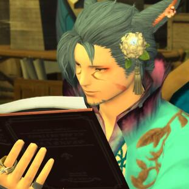
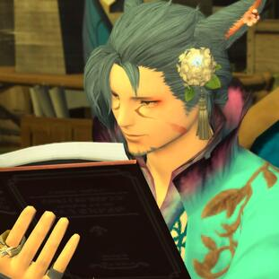

Crystal | Mateus
Ace grew up in a small village bordering the Dravanian Forelands, his family consisting of his mother, father, and little brother. He lived a joyous childhood and began his studies in archery at the age of eight; he learned quickly and excelled past other children who had started before him. Shortly after his ninth birthday, he was invited to travel to Ishgard to obtain tools and supplies for their village to survive the winter. It was at this time that he first learned of Magitek and the applications that it had. He continued his studies upon returning home and vowed to one day obtain a Magitek weapon that could take out the toughest of enemies!
In the fall of his tenth year, he was invited out to gather more tools and supplies for that coming winter, but they were attacked on their way back home by a large group of Gnath militants. The entire party was slaughtered and Ace was left wounded, a long gash along his right eye leaving him blinded. He ran the rest of the way back to his village as soon as it was safe to do so, only to find that it too had been attacked and burned to the ground. His home was still burning as he burst through the door in a desperate search for his family, only to find them mangled and bleeding on the kitchen floor.
Ace awoke sometime later in a holding cell of sorts, and heard many voices that were speaking in hushed whispers that seemed to be getting closer. A bug-like creature stepped into the light and told him that he was in no danger, and that they only wanted to help him recover. He had been rescued by a small party of Vath, a defect group who had separated themselves from the violent Gnath Onemind. Ace cautiously accepted their aid and lived among them for many years, vowing to take revenge on those who had taken everything from him.
He trained tirelessly and became a bounty hunter at the age of 25, chasing any lead on bounties that could bring him closer to his goal. He grew to enjoy the hunt as he traveled far and wide, chasing his marks. In his early thirties, he returned to Ishgard and began training with the Machinist’s guild; he poured over resources on Magitek and honed his skills in using these weapons. Aged 38, he continues to seek out vengeance for his fallen family.
 
